统一坐席工作台系统，整合语音、视频、文字三大服务渠道，覆盖工作台、会话记录、工作统计、省内业务门户等核心模块，为客服坐席提供一站式集约化服务入口。
涵盖工作台（Light/Dark双主题）、视频客服、文字客服、省内业务门户、会话记录、工作统计、白板话务条、VoIP等12个核心界面。
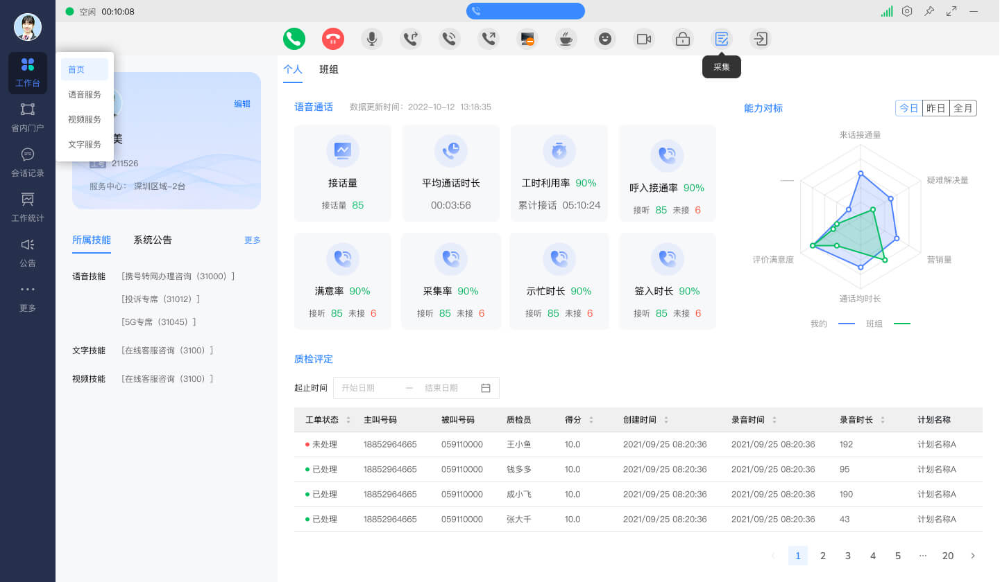
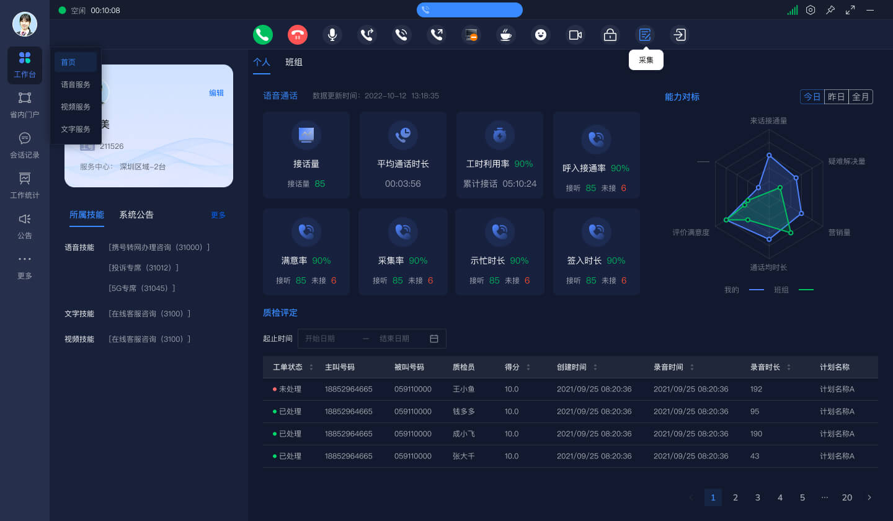
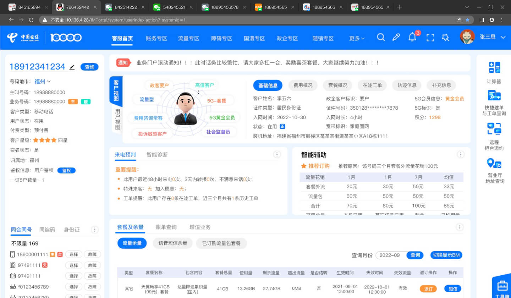
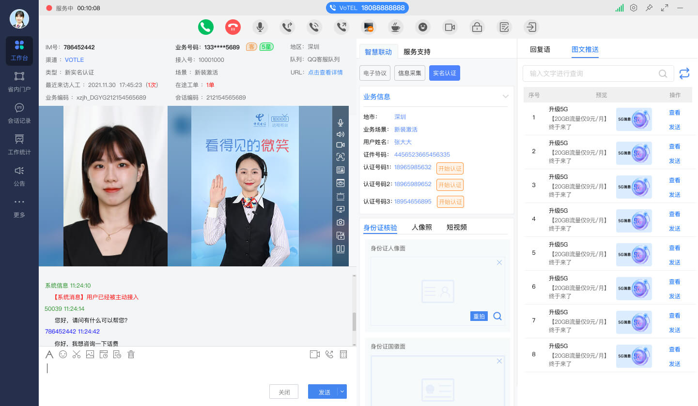
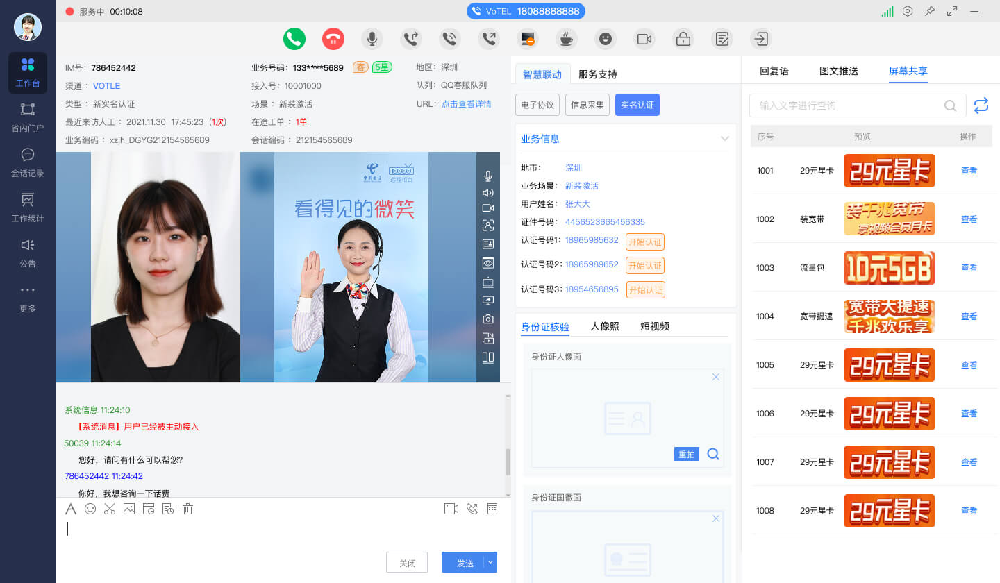
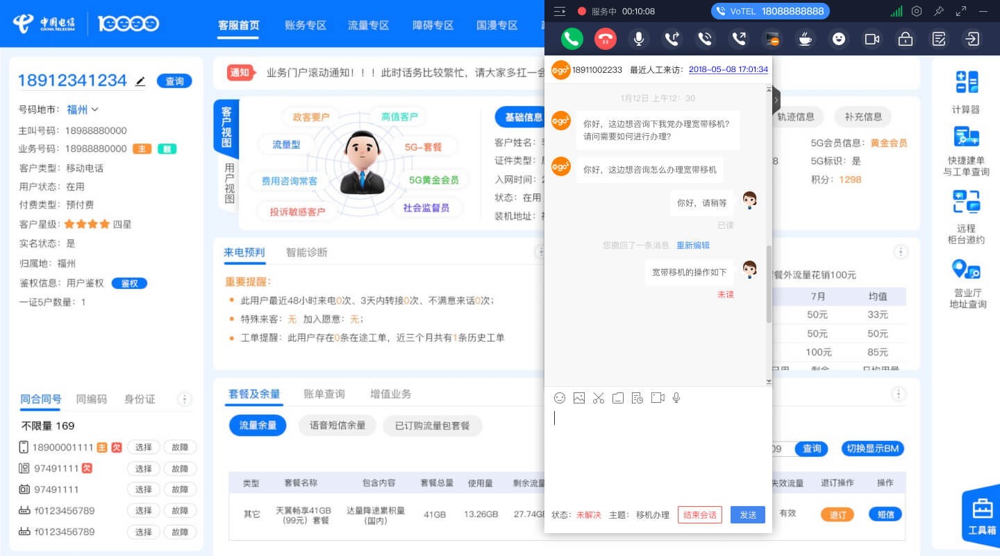
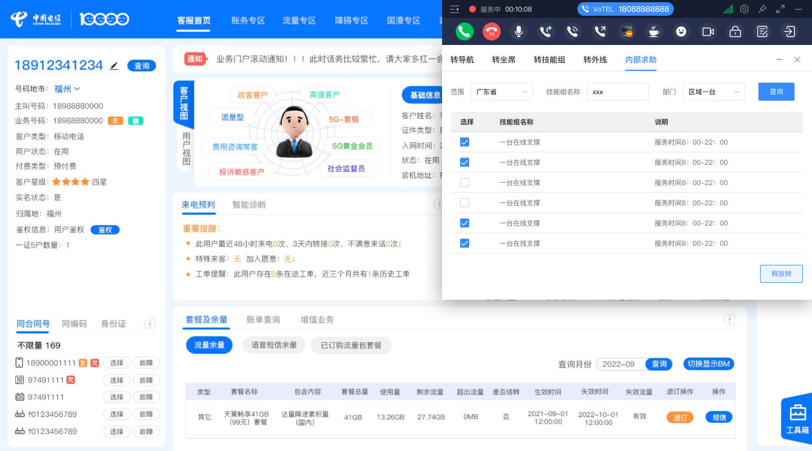
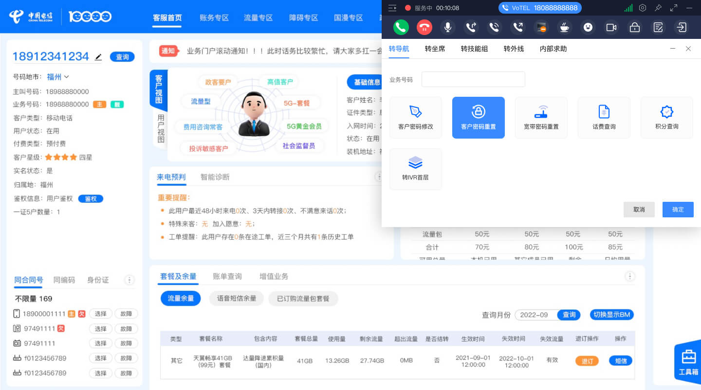
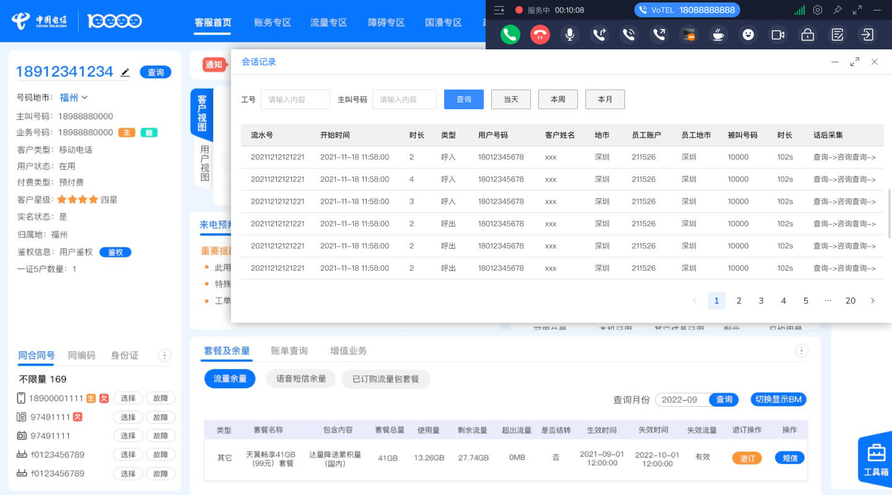
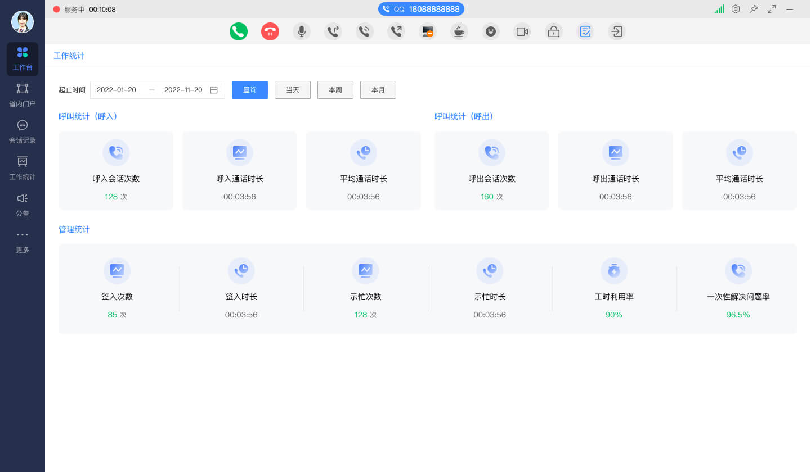
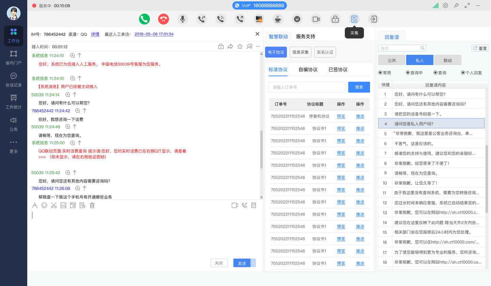
集约门户采用四层架构设计，从渠道接入到数据展示，实现全链路集约化管理。
基于实际 UI 设计提炼的色彩体系与设计特征，支持 Light/Dark 双主题切换。
工作台支持浅色与深色两种主题切换，深色主题降低长时间工作的视觉疲劳
采用深蓝色 #1A2332 侧边栏，与浅色主内容区形成鲜明对比，突出导航层级
KPI 数据以 2×3 网格卡片展示，每张卡片含数值、标签与累计明细，信息密度高
个人与班组多维度能力对标雷达图，支持今日/昨日/全月时间切换
顶部话务控制条常驻显示，含状态指示、通话计时与呼叫控制按钮
绿色=空闲/正常、红色=未处理/告警、黄色=示忙/等待，语义化色彩一致
集约门户覆盖从渠道接入到质检评定的完整业务链路。